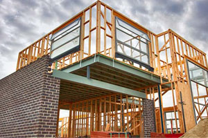

Los materiales son el cuerpo de una construcción por lo que es obligatorio contar con los mejores y mas avanzados materiales para llevar a cabo un gran poyecto.

Existen una amplia variedad de materiales relacionados y no relaciondos a la construccion y seria imposible disponer de todos. Pero lo importante no es tenerlos todos sino saber cual usar y como usarlo, es en este punto donde radica la diferencia. Para ello en ploux destinamos antes de iniciar cada proyecto un tiempo de investigacion sobre los materiales que existen y como podriamos implementarlos.
En Polux creemos en lo que hacemos y por eso invertimos en materiales.
Nosotros como empresa contamos 2 depositos ubicados en distintos lugares donde almacenamos nuestros propios materiales que utilizamos en nuestros proyectos y cuya calidad ya hemos probado repetidas veces. El objetivo de esto es no tener que deppender de los materiales que nos puedan proveer y siempre usar los nuestros, pudiendo asegurar su calidad.
No solo se innova con concreto o aluminio! La cosntruccion sustentable es la forma de avanzar responsablemente y pensando el futuro.
Cada dia se crean nuevas tecnologias que permiten crecer como sociedad sin afectar al medio ambiente. Nosotros nos tomamos estas innovaciones muy en serio y tratamos de implementarlas en todos nuestros proyectos.
¡Saber que hacer y como hacerlo!
Uno podria disponer de todos los recursos del mundo y no saber que hacer con ellos, por eso en Polux tenemos un area especializada en el empleo optimo de los materiales. Ya que no basta solo con tenerlos sino que hay que hay que usarlos con consiencia para no perjudicar al medio ambiente ni al cliente.
